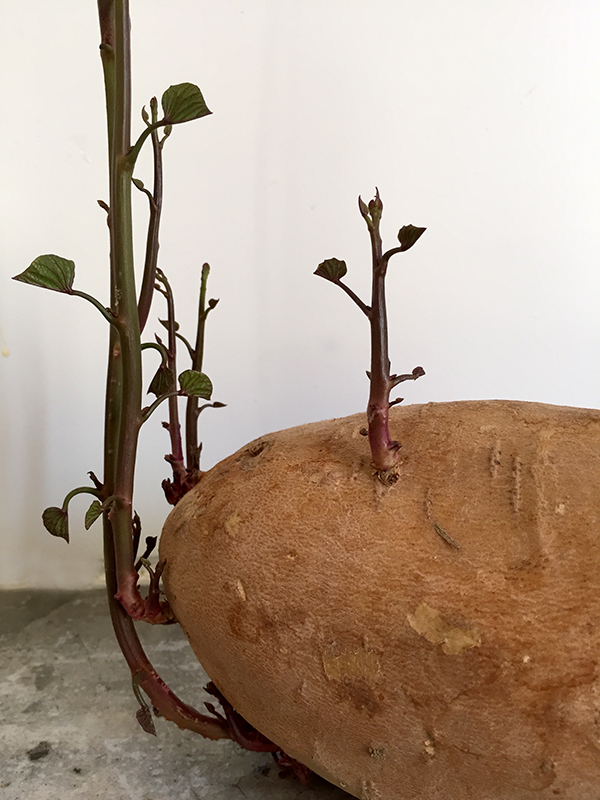

Si dejas el boniato a temperatura ambiente comienza a brotar.
If you leave the sweet potato at room temperature, it begins to sprout.
Wenn man die Süsskartoffel bei Zimmertemperatur lange stehen lässt, fängt es an zu spriessen.


Si dejas el boniato a temperatura ambiente comienza a brotar.
If you leave the sweet potato at room temperature, it begins to sprout.
Wenn man die Süsskartoffel bei Zimmertemperatur lange stehen lässt, fängt es an zu spriessen.

Hemos doblado una trozo de una botella de plástico y la hemos cortad en formas (pájaro y mariposas). Con un corte en la parte inferior, se…
Leer más →
Mira que flores hemos hecho gracias a las instrucciones de Whimsical world of laura bird gracias Laura. Look how cute are this flowers we´ve done by…
Leer más →
Tan rápido se siembra el jardín de la casa de muñecas. A principios de la primavera hacemos árboles en miniatura hechas de alambre con un montón…
Leer más →
Hannah ha cortado con tijeras una mariposa para nuestros vecinos. A partir de una vieja revista ha cortado pequeños fragmentos en unicolor, a continuación, pegó las…
Leer más →
Tienes que cortar una mariposa de un papel doblado (1), luego usas unas tiras de servilletas y lo giras entre las palmas de las manos hasta…
Leer más →